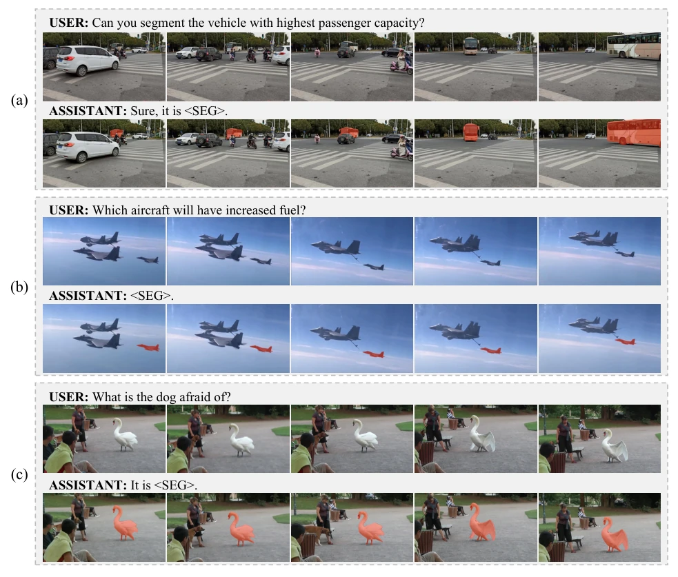
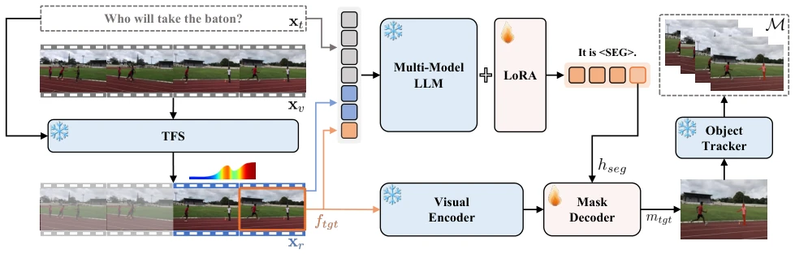
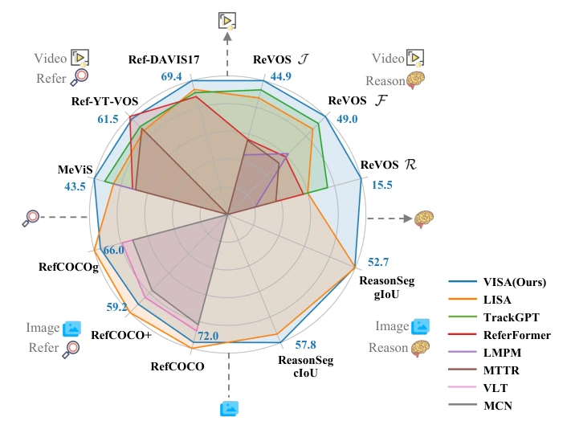
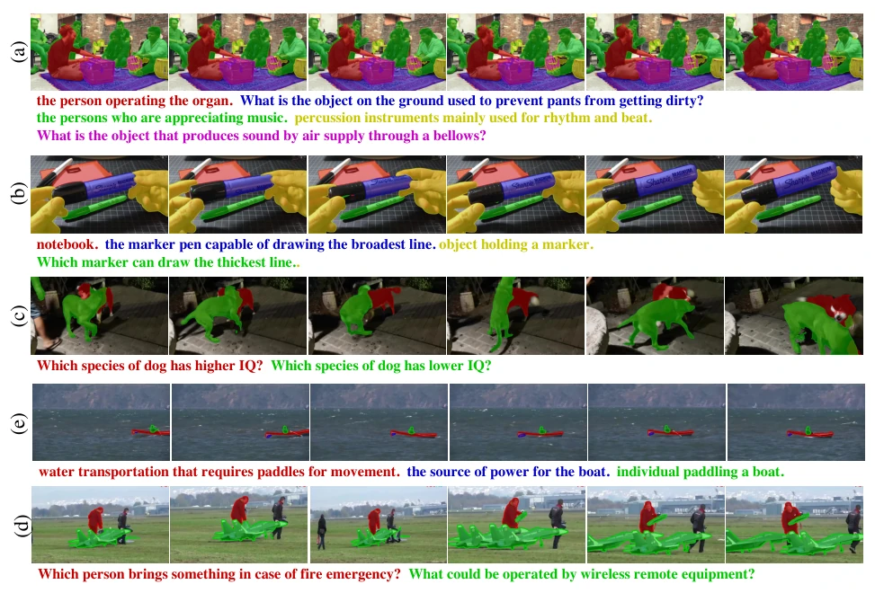
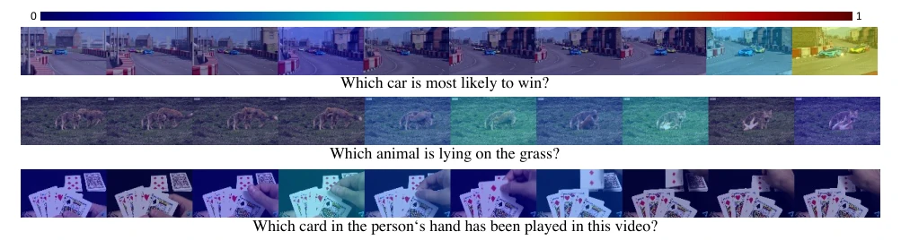

This paper adds a "brain" to video segmentation, enabling the model to rely on common sense reasoning rather than rote memorization of labels. The name VISA sounds quite like an assistant, and it indeed handles vague instructions like "favorite cup". However, forcing LLMs onto video segmentation inevitably leads to explosive computational costs. Although it topped the ReasonVOS leaderboard, small object recognition remains subpar, given the limited number of tokens. The ReVOS dataset is quite generous, with 30,000 data entries sufficient for training for a while. Overall, it is an interesting attempt at the embodied intelligence perception layer, but there is still a distance from true deployment, especially the stability of long-term reasoning needs verification. Additionally, it relies on TFS for frame selection; if keyframes are missed, subsequent segmentation fails directly, and this fragility may become a bottleneck in complex dynamic scenarios.
Existing video segmentation relies on explicit instructions, such as categories [3, 44, 48] or short phrases [2, 37], lacking reasoning capabilities. Users are more accustomed to saying "find my most used cup" rather than "the second red cup on the left". LISA [17] solved image reasoning segmentation, but video requires temporal information. Although TrackGPT [38] attempted video reasoning, frame-by-frame processing lost long-term temporal associations. Embodied intelligence requires understanding object interactions in dynamic environments, which demands models possess world knowledge reasoning and long video understanding capabilities; existing methods struggle to balance spatiotemporal details and complex instructions, limiting robots' interaction capabilities in complex scenarios. Especially regarding the understanding of implicit intent, traditional Referring VOS is completely incapable, which constitutes the core motivation for the ReasonVOS task proposed in this paper.

Figure 1. We enable the reasoning video object segmentation capabilities for current multi-modal LLMs. The proposed VISA is capable of segmenting and tracking objects given text descriptions involving: (a) complex reasoning of world knowledge; (b) inference of upcoming events; and (c) comprehensive understanding of video content.
The VISA architecture is divided into three steps: First, the Text-guided Frame Sampler (TFS) utilizes a lightweight LLM to filter keyframes based on text, reducing the number of visual tokens and solving the long video processing challenge. Second, the multimodal LLM processes the selected target frames and reference frames, outputting text containing the special token `<SEG>`, whose hidden layer embedding is extracted for segmentation. Finally, the embedding of `<SEG>` is used as a prompt for the SAM decoder to generate the target frame mask, which is then bidirectionally propagated to the full video via an object tracker (e.g., XMem [4]). Training employs joint optimization of text generation loss and mask loss, with LoRA fine-tuning the LLM part while the rest is frozen. TFS locates keyframes by designing specific templates to guide the LLM to output percentages, effectively balancing computational cost and spatial detail retention.

Figure 3. Overview of VISA. (a) Given a video xv and a text description xt, a Text-guided Frame Sampler (TFS) is proposed to sample the most distinguishing frame ftgt as the target to be segmented and corresponding reference frames xr. (b) Then ftgt, xr, and xt are tokenized and fed to a Multi-Modal LLM to generate text output, including a special token <SEG>. The last-layer embedding of <SEG> token hseg is then decoded into the segmentation mask mtgt of frame ftgt via the mask decoder. (c) Finally, the segmentation masks of all frames M are generated by propagation with an Object Tracker. The modules in blue are frozen during the training, while the modules in pink are trainable.
Tested on the self-built ReVOS dataset (1042 videos, 35,000 instructions), including reasoning, referring, and hallucination evaluation. Comparison baselines include LISA [17], TrackGPT [38], and traditional Referring VOS methods. Metrics used are J&F and Robustness R. VISA significantly outperforms TrackGPT in reasoning segmentation, with J&F improved by 3.3 points and better hallucination control. It also achieves SOTA on standard datasets such as Ref-YT-VOS. Ablation experiments show that the TFS frame selection strategy and the number of reference frames are critical to performance. It also achieves SOTA on image datasets, proving strong generalization. Additionally, experiments found that increasing the number of visual tokens can improve performance, but limited by computational resources, 112 tokens is the best balance point.

Figure 2. Our proposed VISA consistently achieves state-of-the-art performances on video and image datasets over reasoning and referring segmentation tasks. J is region similarity [37], F is contour accuracy [37], and R is robustness score [20].

Figure 4. Visualizations of VISA on ReVOS dataset.

Figure 5. Heatmaps of the target frame ftgt. To draw the heatmap, we generate 10 responses with the Text-guided Frame Sampler (TFS) and obtain the normalized distribution. As shown, the highlighted frames are related to the text queries.